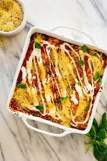

Lasagne

Here is your recipe for Lasagne
This reciple is simple, nutrituous and only takes 20 minutes to make!
Follow the instructions below to make some delicious Lasagne:
Ingredients
- 500 g frozen broccoli florets
- 125 g frozen curly kale
- 1 onion, chopped
- 9 lasagne sheets
- ½ or 1 cup water
- 1 tbsp sweet paprika
- 1 slice bread
- 2 bay leaves
- 1 tsp sea salt
- Black pepper to taste
Step-by-step instructions
- For the creamy cauliflower sauce, take a large microwaveable bowl, tip in the cauliflower florets and diced onions, cover and microwave on full power for 8-9 minutes until the florets are tender.
- Pour into a blender or food processor, (or just use a hand-blender in the bowl), add the milk, garlic, mustard, flour and salt, and blitz to a smooth sauce. Taste and adjust seasoning as required. Set aside.
- For the broccoli & kale layer: take a second large, microwaveable bowl and tip in the broccoli, kale and diced onions. Add 2 tablespoon water, cover and microwave on full power for 9-10 minutes until the broccoli is tender. Drain through a sieve or colander, squeezing out as much moisture as possible with a fork, then mash the florets into small pieces (or use a sharp knife to break them up a bit).
- For the garlic bread crust: toast the slice of bread. In a mini chopper, blender or food processor, blitz the toast, nuts/seeds, garlic, parsley and olive oil together to form crumbs.
- To layer the lasagne: tip half of the broccoli & kale mixture into the bottom of an ovenproof dish, then pour over half the passata. Sprinkle with salt and black pepper, then cover with a layer of lasagne sheets.